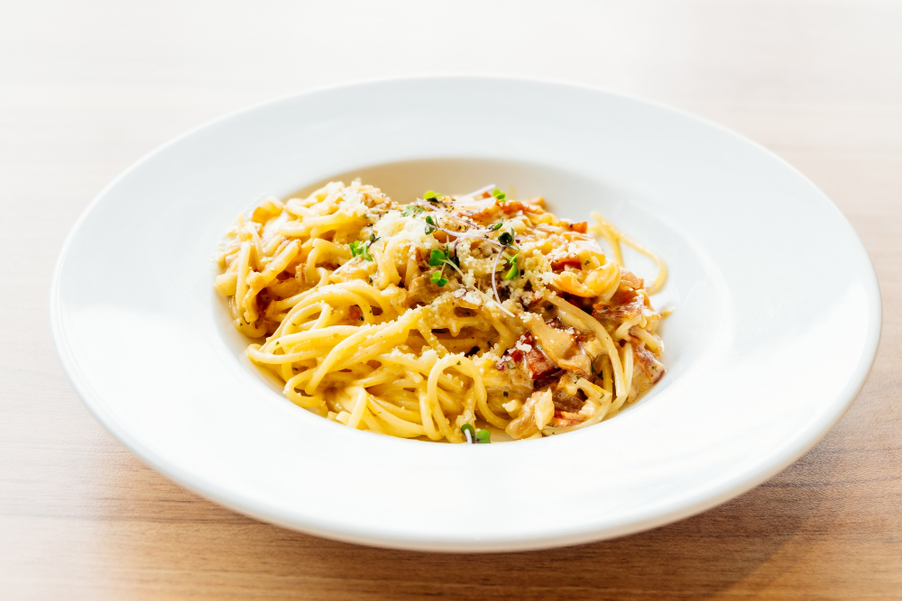

Carbonara

Description
One of the most well-known pasta recipes. It is my favorite, because I like the creamy, full flavor of the sauce.
Ingredients
- salt
- eggs
- egg yolks
- pecorino romano cheese
- parmesan cheese
- ground black pepper
- olive oil
- guanciale
- spaghetti
Steps
- Place a large pot of lightly salted water (no more than 1 tablespoon salt) over high heat and bring to a
boil. Fill a large bowl with hot water for serving, and set aside.
- In a mixing bowl, whisk together the eggs, yolks, pecorino Romano, and Parmesan. Season with a pinch of salt
and generous black pepper.
- Heat oil in a large skillet over medium heat, add the guanciale, and sauté until the fat just renders and
the edges are on the edge of crispness but not hard. Remove from heat and set aside.
- Add the spaghetti to the boiling water and cook until a bit firmer than al dente. Just before the pasta is
ready, reheat the guanciale in the skillet if needed. Reserve 1 cup of pasta water, then drain the pasta and
add it to the skillet over low heat. Stir for a minute or so.
- Empty the serving bowl of hot water, dry it, and add the hot pasta mixture. Stir in the cheese mixture,
adding some reserved pasta water if needed for creaminess. Serve immediately, dressing with a bit of
additional grated pecorino and pepper.
Home